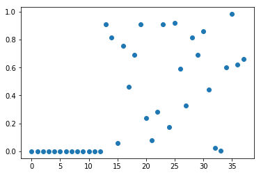
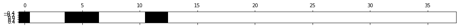
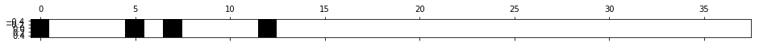
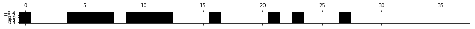

Automated Feature Selection
In our projects, we often deal with datasets containing many features. Some of them may decrease the accuracy of models. In this blog, I am going to show you some automatic ways of selecting relevant features. Imagine that you got a dataset with hundreds of features and you do not know if all of them are relevant in the predictive modeling problem.
The process of identifying or excluding not necessary variables is called feature selection and in most scenarios it is defined through an automated algorithm.
Why feature selection makes our approach more efficient: - Avoiding overfitting. - Increasing prediction performance. - Reducing execution time and increasing data memory-efficient.
Warm Up
We will use the Boston Housing Data as an example. Then, we create a new dataset that consists of the Boston Housing Data with an additional 25 completely random features.
import numpy as np
import pandas as pd
from sklearn.linear_model import LinearRegression
from sklearn.model_selection import train_test_split
from sklearn.datasets import load_boston
boston = load_boston()
df = pd.DataFrame(boston.data)
# label columns
df.columns = boston.feature_names
df['Price'] = boston.target
# Adding some noise data
noise = pd.DataFrame(np.random.randint(1,100,size=(len(boston.data), 25)))
X = pd.concat([df.drop('Price', axis=1), noise], axis=1)
y = df['Price']
df.head(3)
| CRIM | ZN | INDUS | CHAS | NOX | RM | AGE | DIS | RAD | TAX | PTRATIO | B | LSTAT | Price | |
|---|---|---|---|---|---|---|---|---|---|---|---|---|---|---|
| 0 | 0.00632 | 18.0 | 2.31 | 0.0 | 0.538 | 6.575 | 65.2 | 4.0900 | 1.0 | 296.0 | 15.3 | 396.90 | 4.98 | 24.0 |
| 1 | 0.02731 | 0.0 | 7.07 | 0.0 | 0.469 | 6.421 | 78.9 | 4.9671 | 2.0 | 242.0 | 17.8 | 396.90 | 9.14 | 21.6 |
| 2 | 0.02729 | 0.0 | 7.07 | 0.0 | 0.469 | 7.185 | 61.1 | 4.9671 | 2.0 | 242.0 | 17.8 | 392.83 | 4.03 | 34.7 |
Split the data into train sub dataset and test sub dataset
X_train, X_test, y_train, y_test = train_test_split(X, y, train_size = 0.5, test_size = 0.5, random_state=42)
Now, we are ready to look at some methods to select important features from the dataset and discuss types of feature selection algorithms in Python using the Scikit-learn.
Univariate statistics
Univariate statistics is a simple method which is by looking at each feature individually and running a statistical test to see whether it is related to the target. This method is also known as analysis of variance (ANOVA)
Univariate feature selection works by selecting the strongest relationship features with the target variable based on statistical tests. Scikit-learn library is used to select a specific number of relevant features and provides different statistical tests such as SelectPercentile, SelectKBest, GenericUnivariateSelect, etc.
In this case, SelectPercentile is used to decide how many features will be kept, which selects a percentile of the original features. Thereby, we have to determine a threshold on the p-value.
from sklearn.feature_selection import SelectPercentile
select = SelectPercentile(percentile=15)
select.fit(X_train, y_train)
X_train_selected = select.transform(X_train)
print(X_train.shape)
print(X_train_selected.shape)
select.get_support()
(253, 38)
(253, 6)
array([ True, False, False, False, True, True, True, False, False,
False, False, True, True, False, False, False, False, False,
False, False, False, False, False, False, False, False, False,
False, False, False, False, False, False, False, False, False,
False, False])
As the Boston Housing Dataset is a regression task, f_regression is used to determine univariate scores and p-values. Moreover, for classification, chi2, f_classif, mutual_info_classif are used as input a scoring function.
We plot the p-values associated with each of all the features (original features + 25 noise features). Low p-values indicate informative features.
from sklearn.feature_selection import f_classif, f_regression, chi2
import matplotlib.pyplot as plt
%matplotlib inline
F, p = f_regression(X_train, y_train)
plt.figure()
plt.plot(p, 'o')
[<matplotlib.lines.Line2D at 0x297a5407860>]

We can obtain the features that are selected using the get_support method
mask = select.get_support()
print(mask)
# visualize the mask. black is True, white is False
plt.matshow(mask.reshape(1, -1), cmap='gray_r')
[ True False False False True True True False False False False True
True False False False False False False False False False False False
False False False False False False False False False False False False
False False]
<matplotlib.image.AxesImage at 0x297a5787128>

from sklearn.linear_model import LinearRegression
X_test_selected = select.transform(X_test)
ln = LinearRegression()
ln.fit(X_train, y_train)
print(f"Score with all features: {ln.score(X_test, y_test)}")
ln.fit(X_train_selected, y_train)
print(f"Score with only selected features: {ln.score(X_test_selected, y_test)}")
Score with all features: 0.6276409952008808
Score with only selected features: 0.6056841906269855
Model-based Feature Selection
Next, we learn how to select features through a model-based feature selection. This method uses machine learning to model the data, studying the usefulness of a feature according to its relative importance to the predictability of the target variable. In order to do that, the model provides some way to rank the features by importance.
Moreover, the obvious example is linear regression, which works by applying a coefficient multiplier to each of the features. Obviously, the higher the coefficient, the more valuable the feature.
To present model-based selection in scikit-learn, you can use "SelectFromModel" in conjunction with different models. Any of these models can be made into a transformer that does feature selection by wrapping it with the SelectFromModel class:
from sklearn.feature_selection import SelectFromModel
from sklearn.ensemble import RandomForestRegressor
select = SelectFromModel(RandomForestRegressor(n_estimators=100, random_state=42), max_features=15)
select.fit(X_train, y_train)
X_train_rf = select.transform(X_train)
print(X_train.shape)
print(X_train_rf.shape)
(253, 38)
(253, 4)
mask = select.get_support()
# visualize the mask. black is True, white is False
plt.matshow(mask.reshape(1, -1), cmap='gray_r')
<matplotlib.image.AxesImage at 0x297a5d7bcf8>

X_test_rf = select.transform(X_test)
LinearRegression().fit(X_train_rf, y_train).score(X_test_rf, y_test)
0.6080482109223608
Recursive Feature Elimination
Recursive Feature Elimination is similar to the methods above which selects a important features that are deemed most important by the model. In simple term, it is a backward selection of the variables. Literally, this technique begins by building a model on the entire set of variables and computing an importance score for each variable. The least important variables are removed, the model is re-built, and importance scores are computed again.
from sklearn.feature_selection import RFE
select = RFE(RandomForestRegressor(n_estimators=40, random_state=42), n_features_to_select=13)
fit = select.fit(X_train, y_train)
# visualize the selected features:
mask = select.get_support()
plt.matshow(mask.reshape(1, -1), cmap='gray_r')
<matplotlib.image.AxesImage at 0x297a5ddae80>

X_train_rfe = select.transform(X_train)
X_test_rfe = select.transform(X_test)
LinearRegression().fit(X_train_rfe, y_train).score(X_test_rfe, y_test)
0.6587309225824689
select.score(X_test, y_test)
0.812742249823327
print("Num Features: %d"% fit.n_features_)
Num Features: 13
print("Feature Ranking: %s"% fit.ranking_)
Feature Ranking: [ 1 25 16 26 1 1 1 1 18 1 1 1 1 17 5 22 1 15 21 6 4 1 3 1
13 10 11 1 2 14 20 24 23 9 12 7 19 8]
You can see that RFE chose the the top 13 features. These are marked with a choice 1 in the ranking_ array.
The advantage of this approach is that it will not remove variables which were deemed insignificant at the beginning of the process, but become more and more significant as lesser features are removed. For datasets with many variables relatively strongly correlated with one another and relatively weakly correlated with the target variable, this approach may result in slightly different feature choices from those made by model-based selection. The disadvantage is that since you have to train the model many times, this approach is multiplicatively slower than the one-and-done.
Conclusion
Feature engineering is an essential parameter of a successful model. Now, we can see how important feature selection is. In order to increase the accuracy of the model, data visualization and feature selection methods are a nice tool for you to approach the mission.